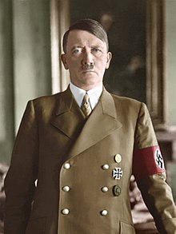

Hitler
Adolf Hitler osztrák születésű német politikus, a 20. századi történelem egyik legmeghatározóbb alakja, a Nemzetiszocialista Német Munkáspárt (németül Nationalsozialistische Deutsche Arbeiterpartei vagy röviden NSDAP) vezetője, kancellár 1933. január 30-ától és 1934. augusztus 2-ától Führer (vezér) megnevezéssel diktátor. (Wikipédia)
Kormányra kerülve felszámolta a weimari köztársaság intézményrendszerét, a jogállamiságot, a német állam föderális jellegét, az ellenzéket és a munkásmozgalmat egyaránt. Létrehozta a közkeletűen „Harmadik Birodalomnak” nevezett új német államot, amely szándékai szerint ezer évre a világ nagyhatalma lett volna. Ellenfeleit munkatáborokba illetve később koncentrációs táborokba deportálta, kínoztatta és meggyilkoltatta. Külpolitikájában nem elégedett meg a versailles-i békerendszer felszámolásával, hanem a gyakorlatban is meg akarta valósítani világuralmi elképzeléseit, és különösen az akkori Szovjetunió európai területeinek bekebelezésével „életteret” akart biztosítani az „árja fajnak”. Ezért Németország elcsatolta Csehszlovákiát, és elfoglalta Ausztriát. 1939. szeptember 1-jén bevonult Lengyelországba, ezzel kirobbantotta a második világháborút, antiszemita céljai elérése érdekében pedig elindította az ún. végső megoldást, a holokausztként elhíresült Endlösungot.

A háború lehetőséget adott Hitler számára, hogy a zsidók elleni gyűlöletét a gyakorlatba átültetve, megtalálja a „zsidókérdés végleges megoldását”. A zsidók létszáma viszont állandóan nőtt a németek által meghódított területek növekedésével. A kiirtásukra vonatkozó első döntések valószínűleg a Szovjetunió megtámadása előtt születhettek. Erre utal a négy Einsatzgruppe felállítása, amelyek kizárólagos feladata a szovjet területeken elfogandó zsidók és kommunista tisztségviselők likvidálása volt. 1941. január 30-i beszédében Hitler emlékeztetett arra a korábbi fenyegetésére, hogy a zsidókat ki fogják irtani. A zsidók szisztematikus megsemmisítése mellett egyidejűleg mintegy 150 000 zsidó származású katona harcolt a német hadseregben. Az 1935 szeptemberében beiktatott nürnbergi törvények nem csak a konvencionális értelemben vett, teljesen zsidó származású embereket fosztották meg emberi jogaiktól, hanem bizonyos esetekben a vegyes házasságból származó német polgárokat is.

Hitler céljainak elérésében teljes kudarcot vallott. A háború után részben miatta erősödtek meg az antifasiszta mozgalmak. Hitler növelni kívánta Németország befolyását és területét, világuralomra tört. Területi hódításai ezzel szemben, bár hatalmasak voltak, rövid életűeknek bizonyultak. Németországnak jelenleg kisebb a területe, mint amekkora 1933-ban volt. A fajelmélet értelmében alacsonyabb rendűnek tekintett népcsoportokat, valamint a kommunistákat esküdt ellenségének tekintette. A holokauszt egyik következményeként 1948-ban megalakult a cionista mozgalom által megálmodott független zsidó állam, Izrael.